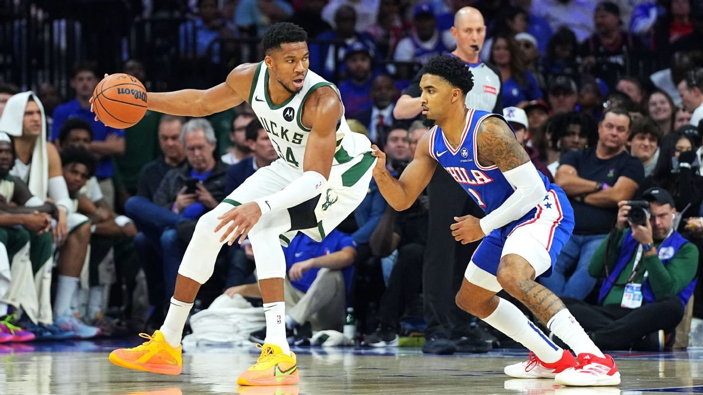

PLAYING BASKETBALL WITH CONFIDENCE
Confidence on the basketball court is crucial for success. Research on confidence shows a high correlation between success on the basketball court and inner confidence. How do you get more confident?
Confidence is a word people assume comes with some level of expertise. Though we have read about confidence often, do we really understand confidence? More importantly, can we make sure our confidence is yielding the results on and off the court we want as athletes, coaches, and parents?
Research on confidence has found:
- Success and confidence are strongly correlated.
- Greater success increases confidence.
- Confidence is measured in thoughts, feelings, and behaviors
- Elite athletes who had a higher level of confidence as demonstrated in their thoughts, feelings, and behaviors had higher levels of success.
- Confidence affects performance and performance affects confidence. A change in either affects the other for good or for bad. This is the confidence/performance cycle.
- Athletes who have resilience can rise out of this confidence/performance cycle if it turns negative.
Here are nine factors contributing to sports confidence (Hays et al. 2007)
- preparation
- performance accomplishments
- coaching
- innate factors
- social support
- experience
- competitive advantage
- self-awareness
- trust
BASKETBALL SEASON CONFIDENCE
Worst case scenario: The bench has its clear pecking order. The coaches have their decided favorites. The players have their ruts, and the parents have their bitterness.
Best case scenario: The bench is alive and a real part of the team success. The coaches are building a dynasty where every player improves. The players rise above their ordinary potential and achieve together a lasting brotherhood or sisterhood of power and dedication and the parents love and root for the other players on the team as much as their own children.The difference between these two contrasting scenarios lies in the thought life of each person. Thoughts influence feelings and both influence behavior. Troubled feelings that dictate thoughts will always come below the standard of excellence. Each of us must decide what we think and how we choose to feel. It is the most noble of all our human capacities...the will to choose.